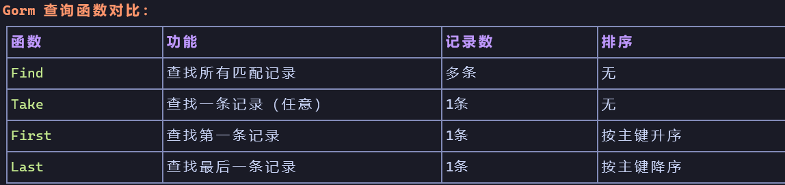
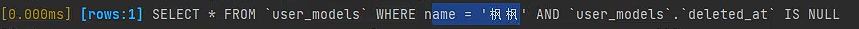
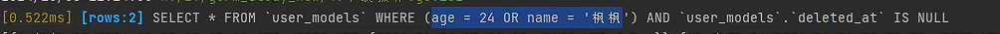

GORM：条件查询与分页
Where查询
直接写条件
Go复制代码
var user UserModel
DB.Where("id = 5").Take(&user)
fmt.Println(user)
user = UserModel{}
DB.Where("id = 5 or age = 11").Take(&user)
fmt.Println(user)
注意where的顺序，再&函数的前面 find , take , first , last (只要是内部使用了&) ;
db.WithContext(ctx).Where("id = ? and status = ?" , id , "published").First(&activity)
== select * from activities where id = 1 and status = "published" order by id limit 1 ;
另外注意First单个出现只能使用来实现主键id查询 First(&表 , id) ;
搭配 Where过滤 使用 则需要使用 Where(...).First(&表)

结构体条件
- 非空字段查询
Go复制代码
var user = UserModel{ID: 5, Name: "李四"}
DB.Debug().Where(user).Take(&user)
// SELECT * FROM `user_models` WHERE (`user_models`.`id` = 5 AND `user_models`.`name` = '李四') AND `user_models`.`id` = 5IMIT 1
fmt.Println(user)
take、first、last只会查主键
Map条件
- 可以查空字段
Go复制代码
var user UserModel
DB.Debug().Where(map[string]any{
"age": 0,
}).Take(&user)
// SELECT * FROM `user_models` WHERE `age` = 0 LIMIT 1
fmt.Println(user)
嵌套where条件
Go复制代码
query := DB.Where("age = ? and name = ?", 11, "王五1")
var user UserModel
DB.Debug().Where(query).Take(&user)
// SELECT * FROM `user_models` WHERE (age = 11 and name = '王五1') LIMIT 1
fmt.Println(user)
Or (可以实现叠加填写)
多个Or可以写为并列的 :


或查询
Go复制代码
var user UserModel
DB.Debug().Or("name = ?", "王五").Or("age = 12").Take(&user)
// SELECT * FROM `user_models` WHERE (name = '王五' OR age = 12) LIMIT 1
fmt.Println(user)
Not
非查询
Go复制代码
var user UserModel
DB.Debug().Not("age = 12").Take(&user)
// SELECT * FROM `user_models` WHERE NOT age = 12 LIMIT 1
fmt.Println(user)
排序
Go复制代码
var userList []UserModel
// 降序
DB.Order("age desc").Find(&userList)
fmt.Println(userList)
// 升序
DB.Order("age asc").Find(&userList)
fmt.Println(userList)
Scan --> 返回的可以是 多个字段 + 结构体/map ;
使用 Pluck 查询到的只有 结构体 且单次单个字段
值得注意的 是 使用 Find, First, Scan 都可以自动解析 结构体中的字段实现使用结构体 获取查询到的全部值 ;
只需要特定字段
Go复制代码
var nameList []string
DB.Model(UserModel{}).Select("name").Scan(&nameList)
fmt.Println(nameList)
或者可以直接使用Pluck
GORM 的 Pluck 方法用于从数据库查询单列并将结果扫描到切片（slice）中。它适用于从模型中检索特定字段，例如：
var ages []int64
db.Model(&User{}).Pluck("age", &ages)
Go复制代码
var nameList []string
DB.Model(UserModel{}).Pluck("name", &nameList)
fmt.Println(nameList)
可以新建一个字段比较少的结构体
Go复制代码
type User struct {
Name string
ID int64
}
var users []User
DB.Model(UserModel{}).Scan(&users)
fmt.Println(users)
// 字段如果不对应 , 使用gorm + column 加字段
type Options struct {
Label string `gorm:"column:name"`
Value int64 `gorm:"column:id"`
}
var options []Options
DB.Model(UserModel{}).Scan(&options)
fmt.Println(options)
分组之后，需要特定字段的数据
Go复制代码
type User struct {
Age int
Count int
}
var us []User
DB.Model(UserModel{}).Group("age").Select("age, count(*) as count").Scan(&us)
fmt.Println(us)
去重
Go复制代码
var nameList []string
DB.Model(UserModel{}).Distinct("name").Select("name").Scan(&nameList)
fmt.Println(nameList)
分页查询
Go复制代码
var users []UserModel
limit -->单页个数
page --> 页数
offset := (page - 1) * size -> 偏移量
执行函数一般要放置在最后 :
Find/First/Count/Creat/Update/Delete
拼接"查询条件函数" : Model(),Where(),Order(),Offset(),Limit(),Select(),Joins() ;
db.WithContext(ctx).Model(&user).Where("").Order("ASC , DESC").Offset().Limit().Find(&)
Scope
很多时候，我们会经常使用重复的查询方法
那么就可以把这些可能被复用的方法抽离出来
就是一个返回查询语句的函数为参数的封装函数 ,可以使用高阶函数实现带参数的查询 --> 返回需要查询的数据 ;
Go复制代码
func Age18(tx *gorm.DB) *gorm.DB {
return tx.Where("age >= ?", 18)
}
var users []UserModel
DB.Scopes(Age18).Find(&users)
fmt.Println(users)
还可以使用高阶函数的特点，实现带参数的scope
Go复制代码
func NameIn(nameList ...string) func(tx *gorm.DB) *gorm.DB {
return func(tx *gorm.DB) *gorm.DB {
return tx.Where("name in ?", nameList)
}
}
var users []UserModel
DB.Scopes(NameIn("王五", "李四")).Find(&users)
fmt.Println(users)
查询钩子
Go复制代码
func (u *UserModel) AfterFind(tx *gorm.DB) (err error) {
fmt.Println("查询钩子")
return
}
原生SQL
使用Row来进行查询操作
Go复制代码
var users []UserModel
DB.Row("select * from user_models where name = ?", "王五").Scan(&users)
fmt.Println(users)
使用Exec来操作数据
SQL复制代码
DB.Exec("update user_models set name = ? where id = ?", "张三", 4)
查询的相关函数
Table("registrations AS ar") -> 指定主查询表,取别名为 ar ,防止出现字段歧义 ;
Joins("JOIN users AS u ON u.id = ar.user_id") -> 实现链表查询, 补充需要字段;